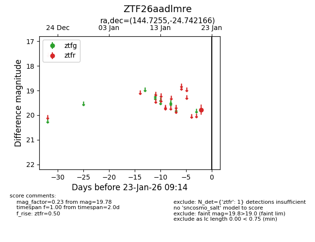
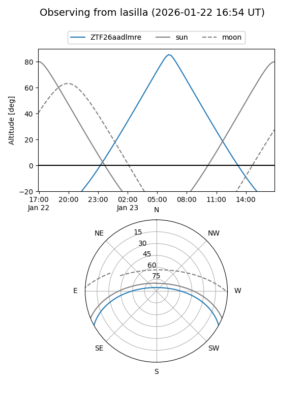
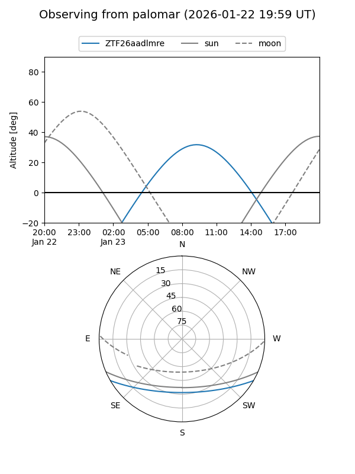

ZTF26aadlmre
Target ZTF26aadlmre at 2026-01-21 09:11
Aliases and brokers:
FINK: link
Lasair: link
ALeRCE: link
alt names
ZTF26aadlmre (ztf,fink_ztf)
Coordinates:
equatorial (ra, dec) = 144.7255,-24.74217
equatorial (HMS+DMS) = 09:38:54.11,-24:44:31.80
galactic (l, b) = (256.7445,+20.40159)
Flags:
Photometry:
last ztfr=19.78
1 ztfr detections
Lightcurve

Visibility


Additional plots